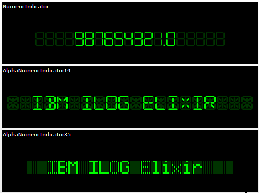

IBM® ILOG Elixir indicators display a single line
of text with a choice of 7-segment, 14-segment and 35-dot character
rendering. The following figure shows the three kinds of indicator
display provided by IBM ILOG Elixir.

The styling of indicators is customizable. For example,
you can change the size and number of characters, the gap between
characters, the colors of the “on” and “off” segments, and the size of the gap between segments.